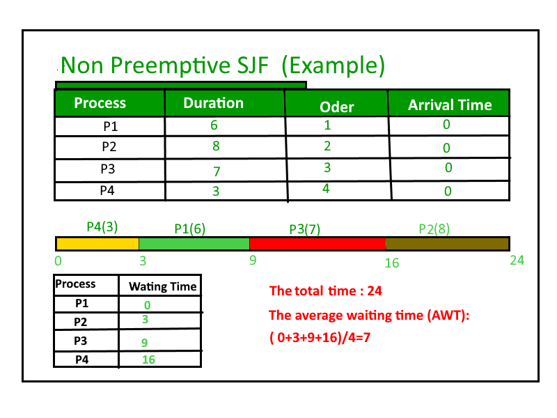

Shortest job first (SJF) or shortest job next, is a scheduling policy that selects the waiting process with the smallest execution time to execute next. SJN is a non-preemptive algorithm.
- Shortest Job first has the advantage of having minimum average waiting time among all scheduling algorithms.
- It is a Greedy Algorithm.
- It may cause starvation if shorter processes keep coming. This problem can be solved using the concept of aging.
- It is practically infeasible as Operating System may not know burst time and therefore may not sort them. While it is not possible to predict execution time, several methods can be used to estimate the execution time for a job, such as a weighted average of previous execution times. SJF can be used in specialized environments where accurate estimates of running time are available.
Algorithm:
1- Sort all the processes in increasing order according to burst time. 2- Then simply, apply FCFS.

How to compute below times in Round Robin using a program?
- Completion Time: Time at which process completes its execution.
- Turn Around Time: Time Difference between completion time and arrival time. Turn Around Time = Completion Time – Arrival Time
- Waiting Time(W.T): Time Difference between turn around time and burst time.
Waiting Time = Turn Around Time – Burst Time
In this post, we have assumed arrival times as 0, so turn around and completion times are same.
// C++ program to implement Shortest Job first
#include<bits/stdc++.h>
using namespace std;
struct Process
{
int pid; // Process ID
int bt; // Burst Time
};
// This function is used for sorting all
// processes in increasing order of burst
// time
bool comparison(Process a, Process b)
{
return (a.bt < b.bt);
}
// Function to find the waiting time for all
// processes
void findWaitingTime(Process proc[], int n, int wt[])
{
// waiting time for first process is 0
wt[0] = 0;
// calculating waiting time
for (int i = 1; i < n ; i++ )
wt[i] = proc[i-1].bt + wt[i-1] ;
}
// Function to calculate turn around time
void findTurnAroundTime(Process proc[], int n,
int wt[], int tat[])
{
// calculating turnaround time by adding
// bt[i] + wt[i]
for (int i = 0; i < n ; i++)
tat[i] = proc[i].bt + wt[i];
}
//Function to calculate average time
void findavgTime(Process proc[], int n)
{
int wt[n], tat[n], total_wt = 0, total_tat = 0;
// Function to find waiting time of all processes
findWaitingTime(proc, n, wt);
// Function to find turn around time for all processes
findTurnAroundTime(proc, n, wt, tat);
// Display processes along with all details
cout << "\nProcesses "<< " Burst time "
<< " Waiting time " << " Turn around time\n";
// Calculate total waiting time and total turn
// around time
for (int i = 0; i < n; i++)
{
total_wt = total_wt + wt[i];
total_tat = total_tat + tat[i];
cout << " " << proc[i].pid << "\t\t"
<< proc[i].bt << "\t " << wt[i]
<< "\t\t " << tat[i] <<endl;
}
cout << "Average waiting time = "
<< (float)total_wt / (float)n;
cout << "\nAverage turn around time = "
<< (float)total_tat / (float)n;
}
// Driver code
int main()
{
Process proc[] = {{1, 6}, {2, 8}, {3, 7}, {4, 3}};
int n = sizeof proc / sizeof proc[0];
// Sorting processes by burst time.
sort(proc, proc + n, comparison);
cout << "Order in which process gets executed\n";
for (int i = 0 ; i < n; i++)
cout << proc[i].pid <<" ";
findavgTime(proc, n);
return 0;
}
Output:
Order in which process gets executed 4 1 3 2 Processes Burst time Waiting time Turn around time 4 3 0 3 1 6 3 9 3 7 9 16 2 8 16 24 Average waiting time = 7 Average turn around time = 13
In Set-2 we will discuss the preemptive version of SJF i.e. Shortest Remaining Time First